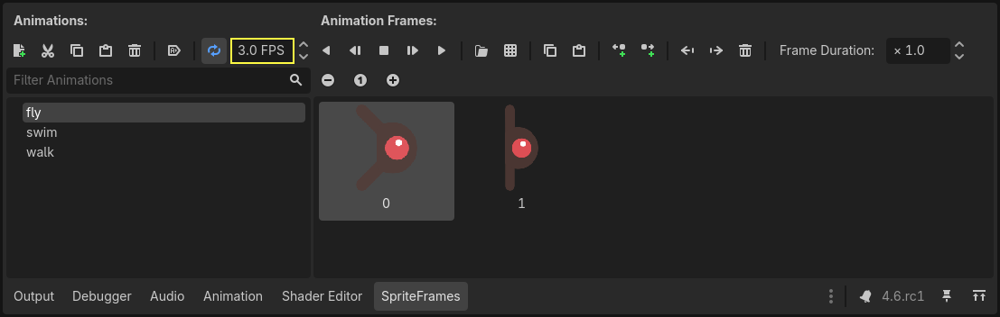

Creating the enemy
Now it's time to make the enemies our player will have to dodge. Their behavior will not be very complex: mobs will spawn randomly at the edges of the screen, choose a random direction, and move in a straight line.
We'll create a Mob scene, which we can then instance to create any number
of independent mobs in the game.
Node setup
Click Scene -> New Scene from the top menu and add the following nodes:
RigidBody2D (named
Mob)
Don't forget to set the children so they can't be selected, like you did with
the Player scene. This is done by selecting the parent node (RigidBody2D) in the
Scene tree dock, then using the button at the top of the 2D editor
(Ctrl + G or Cmd + G on macOS).
Select the Mob node and set its Gravity Scale
property in the RigidBody2D
section of the inspector to 0.
This will prevent the mob from falling downwards.
In addition, in the Mob node inspector,
under the CollisionObject2D
section, expand the Collision group and
uncheck the 1 inside the Mask property.
This will ensure the mobs do not collide with each other.

Set up the AnimatedSprite2D like you did for the
player. This time, we have 3 animations: fly, swim, and walk. There
are two images for each animation in the art folder.
The Animation Speed property has to be set for each individual animation. Adjust it to 3 for all 3 animations.

You can use the "Play Animation" buttons on the right of the Animation Speed input field to preview your animations.
We'll select one of these animations randomly so that the mobs will have some variety.
Like the player images, these mob images need to be scaled down. Set the
AnimatedSprite2D's Scale property to (0.75, 0.75).
As in the Player scene, add a CapsuleShape2D for the collision. To align
the shape with the image, you'll need to set the Rotation property
to 90 (under "Transform" in the Inspector).
Save the scene.
Enemy script
Add a script to the Mob like this:
extends RigidBody2D
using Godot;
public partial class Mob : RigidBody2D
{
// Don't forget to rebuild the project.
}
Now let's look at the rest of the script. In _ready() we play the animation
and randomly choose one of the three animation types:
func _ready():
var mob_types = Array($AnimatedSprite2D.sprite_frames.get_animation_names())
$AnimatedSprite2D.animation = mob_types.pick_random()
$AnimatedSprite2D.play()
public override void _Ready()
{
var animatedSprite2D = GetNode<AnimatedSprite2D>("AnimatedSprite2D");
string[] mobTypes = animatedSprite2D.SpriteFrames.GetAnimationNames();
animatedSprite2D.Play(mobTypes[GD.Randi() % mobTypes.Length]);
}
First, we get the list of animation names from the AnimatedSprite2D's sprite_frames
property. This returns an Array containing all three animation names: ["walk",
"swim", "fly"].
In the GDScript code, we use the Array.pick_random method
to select one of these animation names at random. Meanwhile, in the C# code, we pick a random number
between 0 and 2 to select one of these names from the list (array indices start at 0). The
expression GD.Randi() % n selects a random integer between 0 and n-1.
Finally, we call play() to start playing the chosen animation.
The last piece is to make the mobs delete themselves when they leave the screen.
Connect the screen_exited() signal of the VisibleOnScreenNotifier2D node
to the Mob and add this code:
func _on_visible_on_screen_notifier_2d_screen_exited():
queue_free()
// We also specified this function name in PascalCase in the editor's connection window.
private void OnVisibleOnScreenNotifier2DScreenExited()
{
QueueFree();
}
queue_free() is a function that essentially 'frees', or deletes, the node at the end of the frame.
This completes the Mob scene.
With the player and enemies ready, in the next part, we'll bring them together in a new scene. We'll make enemies spawn randomly around the game board and move forward, turning our project into a playable game.